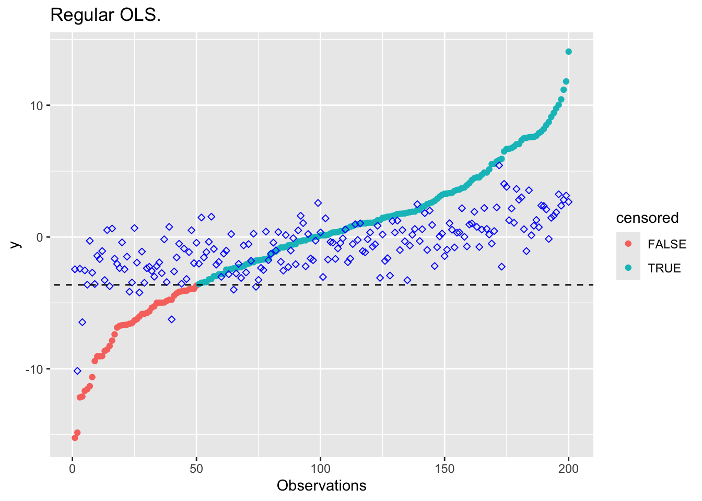

Censored Regression
Introduction
Data collected from an experimental study is sometimes censored, so that only partial information is known about a subset of observations. For instance, when measuring the lifespan of mice, we may find a number of subjects live beyond the duration of the project. Thus, all we know is the lower bound on their lifespan. This right censoring can be incorporated into a regression model via convex optimization.
Suppose that only \(K\) of our observations \((x_i,y_i)\) are fully observed, and the remaining are censored such that we observe \(x_i\), but only know \(y_i \geq D\) for \(i = K+1,\ldots,m\) and some constant \(D \in {\mathbf R}\). We can build an OLS model using the uncensored data, restricting the fitted values \(\hat y_i = x_i^T\beta\) to lie above \(D\) for the censored observations:
\[ \begin{array}{ll} \underset{\beta}{\mbox{minimize}} & \sum_{i=1}^K (y_i - x_i^T\beta)^2 \\ \mbox{subject to} & x_i^T\beta \geq D, \quad i = K+1,\ldots,m. \end{array} \]
This avoids the bias introduced by standard OLS, while still utilizing all of the data points in the regression. The constraint requires only one more line in CVXR.
Example
We will generate synthetic data for this example, censoring observations beyond a value \(D\).
## Problem data
n <- 30
M <- 50
K <- 200
set.seed(n * M * K)
X <- matrix(stats::rnorm(K * n), nrow = K, ncol = n)
beta_true <- matrix(stats::rnorm(n), nrow = n, ncol = 1)
y <- X %*% beta_true + 0.3 * sqrt(n) * stats::rnorm(K)
## Order variables based on y
idx <- order(y, decreasing = FALSE)
y_ordered <- y[idx]
X_ordered <- X[idx, ]
## Find cutoff and censor
D <- (y_ordered[M] + y_ordered[M + 1]) / 2
censored <- (y_ordered > D)
y_censored <- pmin(y_ordered, D)We now fit regular OLS, OLS using just the censored data and finally the censored regression.
suppressWarnings(suppressMessages(library(CVXR)))
## Regular OLS
beta <- Variable(n)
obj <- sum((y_censored - X_ordered %*% beta)^2)
prob <- Problem(Minimize(obj))
result <- solve(prob)
beta_ols <- result$getValue(beta)
## OLS using uncensored data
obj <- sum((y_censored[1:M] - X_ordered[1:M,] %*% beta)^2)
prob <- Problem(Minimize(obj))
result <- solve(prob)
beta_unc <- result$getValue(beta)
## Censored regression
obj <- sum((y_censored[1:M] - X_ordered[1:M,] %*% beta)^2)
constr <- list(X_ordered[(M+1):K,] %*% beta >= D)
prob <- Problem(Minimize(obj), constr)
result <- solve(prob)
beta_cens <- result$getValue(beta)Here’s are some plots comparing the results. The blue diamond points are estimates.
plot_results <- function(beta_res, title) {
d <- data.frame(index = seq_len(K),
y_ordered = y_ordered,
y_fit = as.numeric(X_ordered %*% beta_res),
censored = as.factor(censored))
ggplot(data = d) +
geom_point(mapping = aes(x = index, y = y_ordered, color = censored)) +
geom_point(mapping = aes(x = index, y = y_fit), color = "blue", shape = 23) +
geom_abline(intercept = D, slope = 0, lty = "dashed") +
labs(x = "Observations", y = "y") +
ggtitle(title)
}plot_results(beta_ols, "Regular OLS.")
plot_results(beta_unc, "OLS using uncensored data.")plot_results(beta_cens, "Censored Regression.")Session Info
sessionInfo()## R version 3.5.2 (2018-12-20)
## Platform: x86_64-apple-darwin18.2.0 (64-bit)
## Running under: macOS Mojave 10.14.3
##
## Matrix products: default
## BLAS/LAPACK: /usr/local/Cellar/openblas/0.3.5/lib/libopenblasp-r0.3.5.dylib
##
## locale:
## [1] en_US.UTF-8/en_US.UTF-8/en_US.UTF-8/C/en_US.UTF-8/en_US.UTF-8
##
## attached base packages:
## [1] stats graphics grDevices datasets utils methods base
##
## other attached packages:
## [1] CVXR_0.99-4 ggplot2_3.1.0
##
## loaded via a namespace (and not attached):
## [1] gmp_0.5-13.4 Rcpp_1.0.0 pillar_1.3.1
## [4] compiler_3.5.2 plyr_1.8.4 R.methodsS3_1.7.1
## [7] R.utils_2.8.0 tools_3.5.2 bit_1.1-14
## [10] digest_0.6.18 evaluate_0.13 tibble_2.0.1
## [13] gtable_0.2.0 lattice_0.20-38 pkgconfig_2.0.2
## [16] rlang_0.3.1 Matrix_1.2-15 yaml_2.2.0
## [19] blogdown_0.10.7 xfun_0.5 Rmpfr_0.7-2
## [22] ECOSolveR_0.5 withr_2.1.2 stringr_1.4.0
## [25] dplyr_0.8.0.1 knitr_1.22 bit64_0.9-7
## [28] grid_3.5.2 tidyselect_0.2.5 glue_1.3.0
## [31] R6_2.4.0 rmarkdown_1.11 bookdown_0.9
## [34] purrr_0.3.1 magrittr_1.5 scs_1.2-3
## [37] scales_1.0.0 htmltools_0.3.6 assertthat_0.2.0
## [40] colorspace_1.4-0 labeling_0.3 stringi_1.3.1
## [43] lazyeval_0.2.1 munsell_0.5.0 crayon_1.3.4
## [46] R.oo_1.22.0